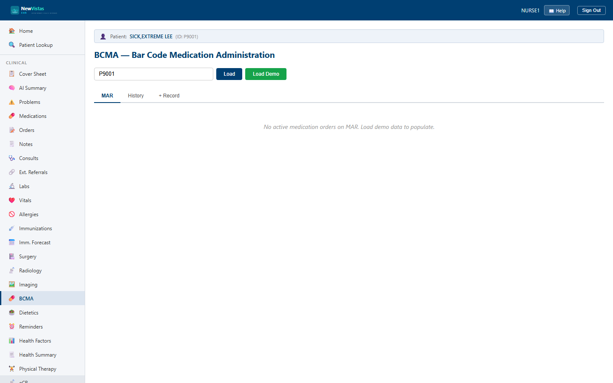

BCMA — Bar Code Medication Administration
Administer medications at the bedside against the patient's MAR, recording each dose as Given, Held, or Refused, and document PRN reasons, effectiveness, and witnesses for controlled substances. This is the equivalent of the CPRS BCMA package.
Open the BCMA screen
- In the sidebar, under Nursing, click BCMA (or go to
/bcma). - In the Patient ID field, type the patient ID (e.g.
4). - Click Load. The MAR tab becomes active and shows the patient's medication list.

Read the MAR
Each row on the MAR tab is a medication order — drug, dose, route, and frequency (for example Lisinopril 10mg PO DAILY). The Status column tells you what's due:
- DUE — a red badge, with the row highlighted; the dose is due now.
- ON SCHEDULE — a green badge; an active order that isn't due yet.
- INACTIVE — a gray badge; a discontinued order.
The MAR tab label carries a due count (e.g. "MAR 3 due") matching the number of rows showing the red DUE badge, so you can see your pending work without opening the tab.
Administer a medication
- On the MAR tab, find the medication row and click Administer.
- In the "Administer: drug" modal, set the Action Status —
GIVEN,HELD, orREFUSED. - Leave the Administration Time as now, and enter Administered By (e.g.
THOMPSON,PATRICIA A). - For an injection, record the Injection Site (leave blank for oral meds). Add Comments, and a Reason when the dose is Held or Refused.
- Click Confirm.
A green banner reads "Administration recorded," the modal closes, and the MAR reloads. The row's Last Given column shows the time and action with your name (e.g. "GIVEN by THOMPSON,PATRICIA A"), and the count increments. The dose also appears on the History tab with a status badge — GIVEN (green), HELD (orange), or REFUSED (red).
PRN medications and controlled substances
For a PRN medication, document why you gave it and, later, how well it worked. Controlled substances additionally require a second nurse as a witness for dual verification. In the current Blazor UI, the reason can be captured in the Comments field; the structured PRN reason, effectiveness follow-up, and witness are recorded through the BCMA API:
- PRN reason —
POST /api/bcma/{patientId}/history/{bcmaId}/prn-reason - Effectiveness (e.g. 30 minutes later) —
POST /api/bcma/{patientId}/history/{bcmaId}/effectiveness - Witness (controlled substances) —
POST /api/bcma/{patientId}/history/{bcmaId}/witness
Record a standalone administration
For a medication not linked to an inpatient order — off-formulary or outpatient — use the + Record tab.
- Click the + Record tab; the heading reads "Record Standalone Administration."
- Enter the Drug Name (e.g.
Ondansetron ODT 4mg), Dosage, and Route. - Set the Action Status, leave the time as now, and enter Administered By. Add an Injection Site, Prescription ID, or Comments as needed.
- Click Record.
A green banner reads "Standalone administration recorded," the form clears, and the dose appears on the History tab. The Drug Name is required — recording with it blank returns the error "Drug name is required" and saves nothing.